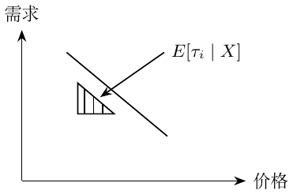

第20章：即插即用估计量
此前通过可比的处理组和对照组得到 ATE：随机分配用 \((Y(0),Y(1))\perp T\)，调整后的观察比较用 \((Y(0),Y(1))\perp T\mid X\) 并要求重叠性。现在我问：处理对谁更有效，谁更敏感？ \[\tau_i=Y_i(1)-Y_i(0),\qquad Y_i^{\mathrm{obs}}=\begin{cases}Y_i(1),&T_i=1,\\Y_i(0),&T_i=0.\end{cases}\] \[\mathrm{ATE}=\tau=E[\tau_i],\qquad \mathrm{CATE}=\tau(x)=E[\tau_i\mid X=x].\] 在 \(y_i=\beta_0+\beta_1t_i+\beta_2X_i+\beta_3t_iX_i+e_i\) 中，拟合效应为 \(\hat\tau(x)=\hat\beta_1+\hat\beta_3x\)。主效应系数 \(\beta_2\) 从这个差值中消去。我起初把无关的 \(X\) 与效应估计偏差联系起来；但在正确设定、未正则化的 OLS 中，无关协变量并不必然造成偏差，可能只是降低精度。
结果预测的 MSE 是 \(E[(Y_i-\hat Y_i)^2]\)。我的目标则是处理效应预测： \[\min_f E[(\tau(X)-f(X))^2].\]
补充说明。
令 \(\Delta=Y(1)-Y(0)\)，个体效应风险还多出与 \(f\) 无关的一项： \[E[(\Delta-f(X))^2]=E[(\tau(X)-f(X))^2]+E[\operatorname{Var}(\Delta\mid X)].\] 因此两种风险有相同最优解，却一般不相等。
二元处理的变换结果。
引入 \(Y_i^*=2Y_iT_i-2Y_i(1-T_i)\)。在各半的随机分配下，\(T\perp(Y(0),Y(1))\)，所以 \(E[TY(t)]=E[T]E[Y(t)]\)。另外 \(Y_iT_i=Y_i(1)T_i\)，\(Y_i(1-T_i)=Y_i(0)(1-T_i)\)。因此 \[\begin{aligned} E[Y_i^*\mid X_i=x] &=2E[Y_i(1)T_i\mid X_i=x]-2E[Y_i(0)(1-T_i)\mid X_i=x]\\ &=2E[Y_i(1)\mid X_i=x]\,0.5-2E[Y_i(0)\mid X_i=x]\,0.5\\ &=\tau(x). \end{aligned}\] 非随机分配时，引入倾向得分 \(e(X_i)\)，在条件可交换性与重叠性下使用 \[Y_i^*=Y_i\frac{T_i-e(X_i)}{e(X_i)(1-e(X_i))}.\] 若已知随机处理概率为 \(p\)，则用 \(p\) 代替 \(e(X_i)\)。关键在于展开条件期望： \[\begin{aligned} E[Y_i^*\mid X_i=x] ={}&\frac{E[Y_i(1)\mid X_i=x]E[T_i\mid X_i=x]}{e(x)}\\ &-\frac{E[Y_i(0)\mid X_i=x]E[1-T_i\mid X_i=x]}{1-e(x)}=\tau(x). \end{aligned}\] 我从累计增益曲线看到，这个变换目标很嘈杂。其保证为 \(E[Y^*\mid X]=\tau(X)\)，即给定 \(X\) 平均后针对 CATE。随机分配下，给定一个人的潜在结果，它也可对该人的效应设计无偏。权重矩条件合适时，更多数据有助于平均噪声，但不能补救缺乏重叠。
连续处理。
目标为 \(\tau(x)=E[\partial Y_i(t)/\partial t\mid X=x]=E[\tau_i\mid X=x]\)。草图为需求随价格向下倾斜。

在 \(X=x\) 的分组内，条件投影斜率及其样本对应量为 \[\hat\tau(x)\approx\frac{\operatorname{Cov}(Y_i,T_i\mid X=x)}{\operatorname{Var}(T_i\mid X=x)} =\frac{\sum_i(Y_i-\bar Y)(T_i-\bar T)}{\sum_i(T_i-\bar T)^2}.\] 设条件均值对处理线性，\(E[Y\mid T,X=x]=a(x)+\tau(x)T\)。在各 \(x\) 处具有相同随机处理分布时，记 \(\mu_T=E[T]\)、\(\mu_Y=E[Y]\)、\(\sigma_T^2=\operatorname{Var}(T)>0\)。对单个观测定义 \[Y_i^*=(Y_i-\mu_Y)\frac{T_i-\mu_T}{\sigma_T^2}.\] 设 \(V_i=(T_i-\mu_T)/\sigma_T^2\)。推导使用 \(E[V_i\mid X_i=x]=0\)、\(E[T_iV_i\mid X_i=x]=1\)，以及 \[E[T_i(T_i-\mu_T)\mid X_i=x]=E[(T_i-\mu_T)^2\mid X_i=x],\] 还使用 \(E[T_ie_i\mid X_i=x]=E[T_i\mid X_i=x]E[e_i\mid X_i=x]\)。在 \(X_i=x\) 时，若 \(Y_i=\alpha+\beta T_i+e_i\)， \[\begin{aligned} E[Y_i^*\mid X_i=x] &=E[(Y_i-\mu_Y)V_i\mid X_i=x]\\ &=E[(\alpha+\beta T_i+e_i-\mu_Y)V_i\mid X_i=x]=\beta=\tau(x). \end{aligned}\] 我的推广尝试是把处理均值换成模型 \(m(X_i)\)： \[Y_i^{*,\mathrm{try}}=(Y_i-\mu_Y)\frac{T_i-\hat m(X_i)}{\{T_i-\hat m(X_i)\}^2}.\] 方差很难估计。如果只需要比较排序，能不能不估计方差？
补充说明。
单个观测的残差平方不等于条件处理方差。在上述条件线性模型中，有效的矩目标为 \[\frac{\{Y_i-\ell(X_i)\}\{T_i-m(X_i)\}}{v(X_i)},\quad \ell(x)=E[Y\mid X=x],\quad v(x)=\operatorname{Var}(T\mid X=x)>0.\] 它的条件均值为 \(\tau(x)\)。省去 \(v(x)\) 后，排序针对的是 \(v(x)\tau(x)\)；只有额外条件下，例如 \(v(x)\) 为正常数，才保留效应排序。尝试中的单个残差分母还可能在零附近爆炸。第22章给出相关的加权 R-loss 写法。
非线性关系：目前还没有解决方式。 Maybe：\(D_i=1/P_i^\alpha\)，于是 \(\log D_i=-\alpha\log P_i\)。这是一个可以继续探索的变换，并非已经完成的一般解法。